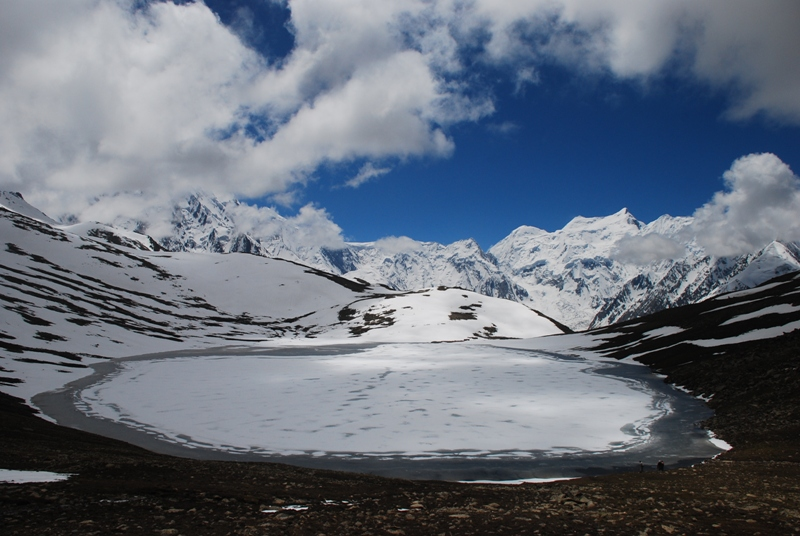

<div class="portfolio-single-load clearfix">
    <div class="custom-full-width-box">
        <div class="custom-container">
            <div class="custom-row align-items-center">
                <div class="custom-image-column">
                    
                </div>
                <div class="custom-text-column">
                    <h2 class="custom-heading">Rush Lake</h2>
                    <p class="custom-paragraph">
                        Located  in the captivating Nagar Valley of Hunza Nagar District in Pakistan's Gilgit Baltistan Province, is a gem awaiting exploration by avid trekkers. At an impressive altitude of approximately 4,694 meters above sea level, this alpine wonder sits at the foot of the iconic Rush Pari Peak (5,098m). Renowned peaks like the Golden Peak and Miar Peak, just 15km away, enhance its allure.
                        <br><br>
Ranked as the 27th highest alpine and glacial lake globally, Rush Lake promises a trekking experience unlike any other. Accessible via the Bultar Glacier, also known as the Hoper Glacier, and the Barpu Glacier, the journey to this remote destination is both challenging and rewarding. Along the way, trekkers are treated to awe-inspiring vistas of the majestic Karakoram Mountains, with the towering Rakaposhi (7788m) standing as a testament to nature's grandeur. Join us for an unforgettable adventure amidst the breathtaking beauty of Rush Lake.

                    </p>
                </div>
            </div>
        </div>
    </div><!-- .custom-full-width-box end -->

</div><!-- end single-project -->
